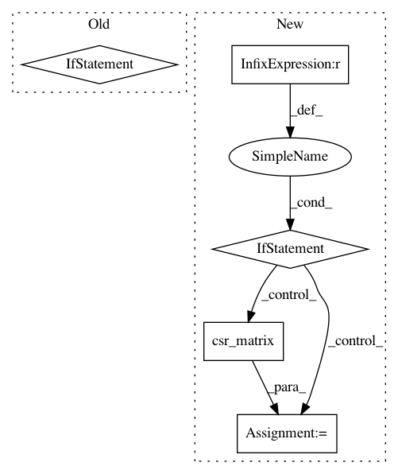

e5f32aaf88d7190cdecb8a6d9cec01054cf3cd9c,pygsp/graphs/nngraphs/nngraph.py,NNGraph,__init__,#NNGraph#Any#Any#Any#Any#Any#Any#Any#Any#Any#Any#Any#,44
Before Change
self.gtype = "nearest neighbors"
else:
self.gtype = gtype + ", NNgraph"
if plotting:
self.plotting = plotting
else:
self.plotting = {}
self.symmetrize_type = symmetrize_type
N, d = np.shape(self.Xin)
Xout = self.Xin
After Change
// Symmetry checks
if np.abs(W - W.T).sum():
if symmetrize_type == "average":
W = (W + W.T) / 2.
elif symmetrize_type == "full":
A = W > 0
M = (A - (A.T * A))
W = sparse.csr_matrix(W.T)
W[M.T] = W.T[M.T]
else:
raise ValueError("Unknown symmetrize type.")
else:
pass
super(NNGraph, self).__init__(W=W, gtype=gtype, plotting=plotting,
In pattern: SUPERPATTERN
Frequency: 3
Non-data size: 5
Instances
Project Name: epfl-lts2/pygsp
Commit Name: e5f32aaf88d7190cdecb8a6d9cec01054cf3cd9c
Time: 2015-11-24
Author: lionel.martin@epfl.ch
File Name: pygsp/graphs/nngraphs/nngraph.py
Class Name: NNGraph
Method Name: __init__
Project Name: biolab/orange3
Commit Name: 8a76580ec839cf6fff9364ff1f4794e86834cbe6
Time: 2016-07-15
Author: niko.colneric@gmail.com
File Name: Orange/statistics/util.py
Class Name:
Method Name: stats
Project Name: WZBSocialScienceCenter/tmtoolkit
Commit Name: 8c8417497aff9741449d9bd3681cad6aea06283a
Time: 2019-06-19
Author: markus.konrad@wzb.eu
File Name: tmtoolkit/preprocess/_tmpreproc.py
Class Name: TMPreproc
Method Name: get_dtm